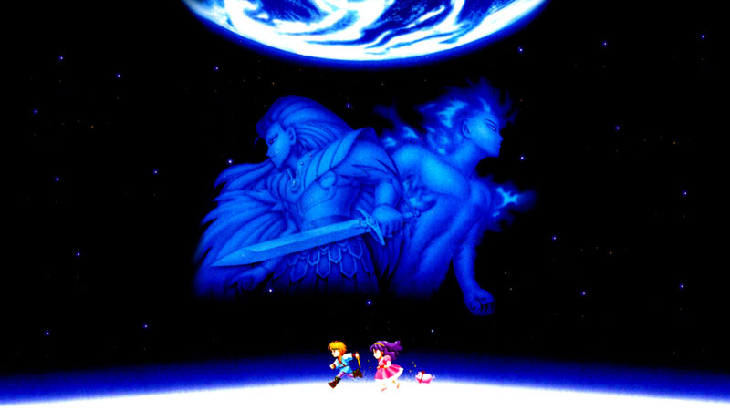

Los 10 mejores juegos de la historia
todo legenda tiene un gran comienzo si eres como yo que viene juegando desde los noventa y fuiste de los que jugo Zelda, mario o sonic, sabes de lo que hablo.
comienzo con esto dienciendo que todo GAMER tiene su Crush muchos comenzaron con la leganda de zelda , otros con super mario bros , otro con agul RPG bien loco pero pondre juegos aqui que cambiaron la forma de personar de los juegadores aqui les traigo los 10 mejores juegos de todos los tiempo
los 10 mejroes juegos de SNES
esta es mi lista y para mi estos son los 10 mejores juegos, tambien pondre una lista no muy detalla de cuales serian los 15 mejores juegos de snes pero esto es mi decision y opinion propia no tengo la verdad absoluta y tu puedes tener tu propia decicions

Legend of Zelda: A link to the Past
este juegos sin duda es uno de los mejores para mi el mejor de la snes deseguro no el mejor para mucho pero si estaria en los primeros 10 por que todos sabes que todo lo que esta echo este juega las mazmorras los item la historia el trabajo sabes que es una buena legenda.
¿Cuánto dura el Zelda A Link to the Past?
20 horasDuración: 91. A Link to the Past puede presumir de ser uno de los juegos de Aventura más largos de SNES, con una duración de poco más de 20 horas, aproximadamente, si simplemente nos terminamos la historia.
A Link to the Past es una precuela del original The Legend of Zelda y Zelda II: The Adventure of Link,[11][12][13] y dentro de la cronología oficial se encuentra el primer juego de la línea de tiempo "Hero is Defeated" (El héroe es derrotado) que conecta con un escenario de realidad alternativa en el que el Hero of Time no tiene éxito en Ocarina of Time. Esto resulta en que Ganon sea encarcelado en el Reino Sagrado en su forma de Bestia Oscura por desesperación. Habiendo reunido con éxito las tres piezas de la trifuerza, los malos deseos de Ganon han transformado el reino en el Reino Oscuro. Al comienzo del juego, Link, el último descendiente de los Caballeros de Hyrule, es despertado por un mensaje telepático de la Princesa Zelda, quien dice que ha sido encerrada en el calabozo del Castillo de Hyrule. Cuando el mensaje se cierra, Link encuentra a su tío listo para rescatar a Zelda y le dice a Link que se quede en la cama. Sin embargo, después de que su tío se va, Link ignora sus órdenes y lo sigue a través de la noche lluviosa hasta las mazmorras bajo el Castillo de Hyrule. Cuando llega, encuentra a su tío herido de muerte, y se le dice que rescate a la Princesa Zelda, recibiendo su espada y escudo antes de morir poco después. Link navega por el castillo y rescata a Zelda de su prisión, y los dos escapan por un pasadizo secreto a las alcantarillas que conduce a un santuario.
El sacerdote cuenta a Link en el santuario que Agahnim, un mago que ha usurpado el trono y embrujado a los soldados del rey, está planeando romper un sello hecho hace cientos de años por los Siete Sabios para encarcelar al mago oscuro Ganon en el Mundo Oscuro, que era conocido como el Reino Sagrado antes de que Ganon, entonces conocido como Ganondorf, lo invadiera, obtuviera la Trifuerza y usara su poder para envolver el reino en la oscuridad. Agahnim tiene la intención de romper el sello enviando a los descendientes de los Siete Sabios al Mundo Oscuro. Lo único que puede derrotar a Agahnim es la Espada Maestra, una espada forjada para luchar contra el mal que sólo puede ser empuñada por el héroe elegido. Para demostrar que es digno de blandirlo, Link necesita tres colgantes mágicos, que representan las virtudes del Valor, la Sabiduría y el Poder, escondidos en mazmorras custodiadas por míticos defensores. En su camino para recuperar el primero, conoce a un anciano, Sahasrahla, que se convierte en su mentor. Después de recuperar los colgantes, Link los lleva al lugar de descanso de la Espada Maestra. Mientras Link saca la espada de su pedestal, Zelda lo llama telepáticamente al Santuario, informándole que han llegado soldados del Castillo de Hyrule. Link llega al Santuario momentos después de que los soldados han abandonado el lugar, donde se entera por el sacerdote moribundo de que Zelda ha sido llevado al Castillo de Hyrule. Link va a rescatarla pero llega demasiado tarde; Agahnim envía a Zelda al mundo oscuro. Link entonces se enfrenta a Agahnim en batalla y lo derrota, pero se las arregla para usar lo último de su poder para enviar a Link al mundo oscuro también.Para salvar a Hyrule, Link debe rescatar a las descendientes de los Siete Sabios de las mazmorras dispersas por el Mundo Oscuro, cada uno de ellas custodiada por uno de los esbirros de Ganon. Una vez que las siete doncellas son liberadas, usan su poder para romper la barrera alrededor de la Torre de Ganon, donde Link se enfrenta a un Agahnim reencarnado, que crea dos espectros fantasmales cada uno tan poderoso como él. Después de que Link derrota a Agahnim por segunda vez, Ganon se levanta de su cuerpo, se convierte en un murciélago y vuela. Link persigue a Ganon y lo confronta dentro de la Pirámide de Poder en el centro del Mundo Oscuro. Después de una batalla que resultó en la muerte de Ganon, Link toca la Trifuerza y restaura el Mundo Oscuro y Hyrule a su estado anterior, devuelve a su tío y al sacerdote a la vida, y restaura al padre de Zelda, el verdadero.
Super Mario World
2do lugar de la lista super mario world cosiderando el mejor juego de la historia por mucho este juego multiplataforma es el primer lugar y el preferido de muchos me gustaba mucho jugarlo en la epoca de los 99 y comienzo del 2000 teniendo muchos secretos y mundo que pasar en los tiempos que eramos felices y no lo sabiamos
Super Mario World (スーパーマリオワールド, Sūpā Mario Wārudo), subtitulado como Super Mario Bros. 4 en su versión original en Japón, fue el primer videojuego creado para acompañar el estreno de Super Nintendo Entertainment System para Japón, Europa y América del Norte. Su estreno en Japón fue el 21 de noviembre de 1990 y América del Norte el 13 de agosto de 1991. Como novedad destacable presenta un nuevo personaje muy similar a un dinosaurio de color verde de nombre Yoshi.
En la década 2000 también fue re-estrenado como Super Mario World: Super Mario Advance 2 (Super Mario Advance 2 en Japón) en su versión para Game Boy Advance, que incluyo como mini-juego también a Mario Bros.. A este le seguiría eventualmente su secuela Super Mario World 2: Yoshi's Island.
La trama se centra en la búsqueda que Mario y Luigi deben emprender para salvar a la «Dinosaur Land» y rescatar a la Princesa Toadstool de las garras de Bowser, el antagonista principal de la serie. Ambos hermanos deben viajar por siete mundos para restaurar el orden en «Dinosaur Land».4 Para el juego, se basó en el gameplay de anteriores entregas de la saga, y además fueron introducidos nuevos poderes que aumentan las habilidades de los personajes, junto con otros aspectos que sirvieron como base para varios títulos posteriores de la serie. El pequeño dinosaurio verde, Yoshi, es introducido por primera vez en toda la historia de la serie; a su vez este le permite a Mario montar sobre él, y con ello avanzar más rápido a través de «Dinosaur Land».5 Miyamoto comentó que desde la producción de Super Mario Bros., deseaba incluir un dinosaurio para que fuese el compañero de Mario durante su aventura.6 En ésta entrega, fueron incluidos nuevos power-ups que le permiten al jugador percibir nuevas opciones de gameplay; de entre los nuevos ítems que figuran en ésta entrega, destaca la «Cape Feather», la cual le permite al protagonista adquirir una capa con la cual puede volar por un cierto tiempo en el aire, algo parecido a lo ya visto en Super Mario Bros. 3.5
El juego fue un éxito crítico y comercial, con una venta de más de 20 millones de copias en todo el mundo.7 Ha sido relanzado tres veces; la primera como parte de un combo para Super Mario All-Stars para la SNES en 1994. En segundo lugar, fue puesto a la venta para la consola portátil Game Boy Advance, con un gameplay modificado, siendo la segunda parte de la serie Super Mario Advance, en la cual adquirió el nombre de Super Mario Advance 2: Super Mario World. Su tercer relanzamiento fue para la Consola Virtual de la consola Wii, en Estados Unidos y Canadá durante el año de 2007; hubo pocos cambios respecto a la versión original para SNES. Su lanzamiento original en Japón fue el 21 de noviembre de 1990, en Estados Unidos el 13 de agosto de 1991 y en Europa el 4 de junio de 1992.
Chrono Trigger
3er lugar y me van a matar por que el bronce se lleva Chrono Trigger no sabia como poner este en primer lugar o legend of zelda pero tambien este esta en mi cabeza cuando hable de un top 10 por potenerlo en 1er lugar tambien la historia los personaje el trasfondo los tecnologio que nostalgia nostra la consola de 16bits que juegfamos que momentos inolvidables
Super Mario RPG:Legend of the Seven Stars
creo que me va a dar algo Super Mario RPG: Legend of the Seven Stars para mi un juego que vi mucho potencial cuando vi que mario no estaba echo solo para saltar en platarforma 2d sino que ver un rpg de mario donde vimos un juegazo que podeamos hacer lo que sea este juego tenia que estas en el top si o si
Donkey Kong Country saga
5Donkey Kong Country saga que te puedo decir estos tres juegos me hicieron durar horas y horas jugando nunca termien ni el 2do , ni 3ra parte de su saga pero esto estoy seguro los terminare Dios mediante.
Kirby Super Star
Super Star este juego siempre me quedo alfinal nunca lo paso o no recuerso si lo pase pero este juego me agrada visualmente mas que mario y Donkey kong su historia lo facil y inmerso es ser una bolita todo tierna que consigue el pode de todos los oponente que traga para mi uno de los mejores juegos de la entrega
Super Metroid
Super Metroid este juego trata de samus una mercenaria que acaba con piratas intergalaticos y cuida del las vidas espaciales
Secret Mana
me van a matar me van a matar por ponerte tan lejos pero este es uno de mis mas favorito no lo llegue a pasar creo que lo deje en el jefe final, una linda historia
Terranigma
Wao demasiadas emosiones encontradas en este juegazo pedazo de juego uf de mis favorito de lo mejor este juega hace que quieras comprar un snes su historia su personajes trata de como los seres humanos fuimos evoliconando
Ilusion of Time o Gaia
este lo puse en ultimo pero de menos importante este juego es de la saga mundo abierto conformado por dos mas ilusion og gaia tambien conocio ilusion of time es el segundo de la saga mundo abierto junto con terranigma y otro que olvide mencionar tampoco que pase pero muy bueno
Los 90
listo diras que en los 90 no hubo nada solo ir a la casa de un amigo tuyo que era rico o uno de sus familiares viajaban o el viaja y se hizo con una consola de ese tiempo ya sea un game boy o una snes o sega admitelo en ese tiempo el nino que tenia una de esas consola era el amo del vecindario, me acuerdo en esos tiempo que casi no habia internet los trucos no se sabian o se decian de boca en boca no es que podias ir a internet y descargabas los trucos o los buscabas en alguna pagina de truco o veias en Youtube como pasar tal parte en ese tiempo debias tu mismo pasar horas y horas buscando los trucos accediendo a los secretos investigando y descubriendo tu mismo.
la Epoca dorada
eso es la epoca del 2000 donde ya existian los playstation donde internet y los trucos del sanadrea ya no son un mito donde todo era esperar el vienes y jugar o esperar la noche y esperar a tus amigos para jugar naruto ultimate ninja 3 o jugar en n64 mario kart o Golden eye james bond
Deja una respuesta